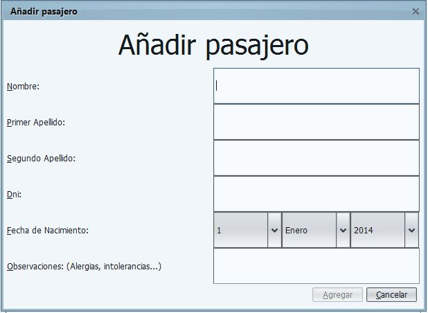
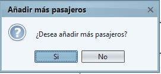

Reserva de Cruceros
En esta ventana, puede agregar a las personas que van a realizar el viaje en el crucero.

Los datos de los pasajeros que debe rellenar son:
- Nombre.
- Primer apellido.
- Segundo apellido.
- Dni.
- Fecha de nacimiento.
- Observaciones. (Aquí debe incluir cualquier dato importante para que su viaje
sea lo más confortable posible: enfermedades, alergias, intolerancia, etc.)
Una vez añadido un pasajero, el sistema le preguntara si desea añadir alguno más
para facilitar el trabajo.
